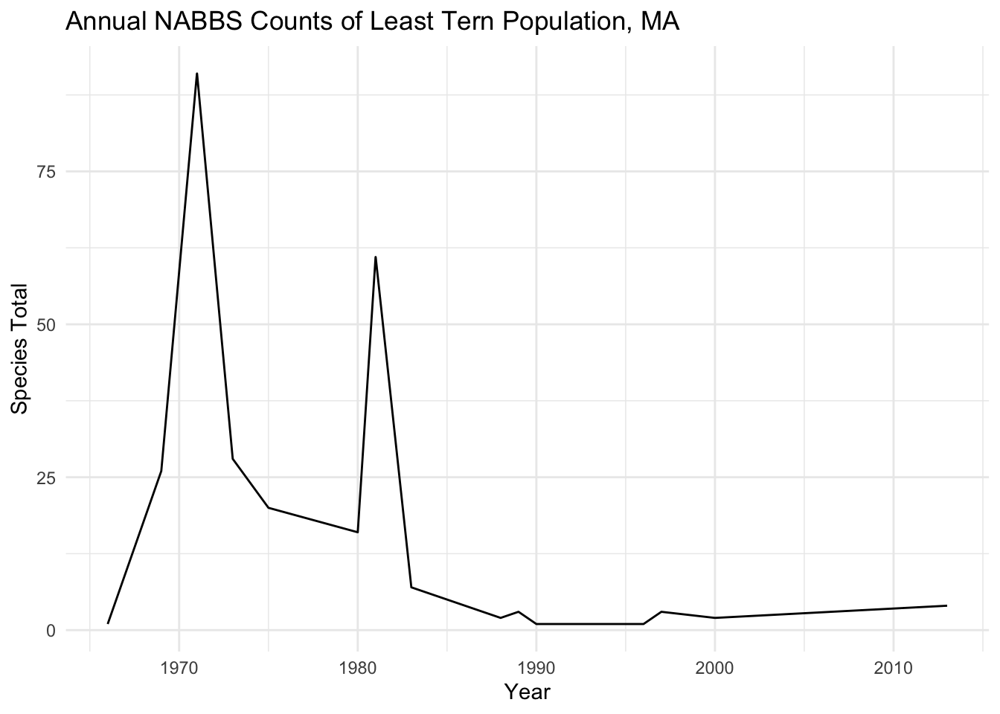

library(rtweet)Warning: package 'rtweet' was built under R version 4.1.2nabbs_ma -> nabbs routes (on state and route id) nabbs_ma -> nabbs_species (on AOU) nabbs_ma -> nabbs_weather (on routedataid) nabbs_ma -> nabbs_vehicle (on routedataid)
Warning: package 'tidyverse' was built under R version 4.1.2── Attaching packages ─────────────────────────────────────── tidyverse 1.3.2 ──
✔ ggplot2 3.3.6 ✔ purrr 0.3.4
✔ tibble 3.1.8 ✔ dplyr 1.0.10
✔ tidyr 1.2.1 ✔ stringr 1.4.1
✔ readr 2.1.2 ✔ forcats 0.5.1 Warning: package 'ggplot2' was built under R version 4.1.2Warning: package 'tibble' was built under R version 4.1.2Warning: package 'readr' was built under R version 4.1.2Warning: package 'dplyr' was built under R version 4.1.2Warning: package 'stringr' was built under R version 4.1.2── Conflicts ────────────────────────────────────────── tidyverse_conflicts() ──
✖ dplyr::filter() masks stats::filter()
✖ purrr::flatten() masks rtweet::flatten()
✖ dplyr::lag() masks stats::lag()Rows: 56311 Columns: 14
── Column specification ────────────────────────────────────────────────────────
Delimiter: ","
chr (2): Route, AOU
dbl (12): RouteDataID, CountryNum, StateNum, RPID, Year, Count10, Count20, C...
ℹ Use `spec()` to retrieve the full column specification for this data.
ℹ Specify the column types or set `show_col_types = FALSE` to quiet this message.Rows: 5756 Columns: 11
── Column specification ────────────────────────────────────────────────────────
Delimiter: ","
chr (3): StateNum, Route, RouteName
dbl (8): CountryNum, Active, Latitude, Longitude, Stratum, BCR, RouteTypeID,...
ℹ Use `spec()` to retrieve the full column specification for this data.
ℹ Specify the column types or set `show_col_types = FALSE` to quiet this message.Rows: 129644 Columns: 22
── Column specification ────────────────────────────────────────────────────────
Delimiter: ","
chr (8): StateNum, Route, StartTemp, EndTemp, TempScale, StartTime, EndTime...
dbl (14): RouteDataID, CountryNum, RPID, Year, Month, Day, ObsN, TotalSpp, S...
ℹ Use `spec()` to retrieve the full column specification for this data.
ℹ Specify the column types or set `show_col_types = FALSE` to quiet this message.Rows: 1 Columns: 9
── Column specification ────────────────────────────────────────────────────────
chr (9): X1, X2, X3, X4, X5, X6, X7, X8, X9
ℹ Use `spec()` to retrieve the full column specification for this data.
ℹ Specify the column types or set `show_col_types = FALSE` to quiet this message.Rows: 756 Columns: 9
── Column specification ────────────────────────────────────────────────────────
chr (8): X2, X3, X4, X5, X6, X7, X8, X9
dbl (1): X1
ℹ Use `spec()` to retrieve the full column specification for this data.
ℹ Specify the column types or set `show_col_types = FALSE` to quiet this message.Warning: The `value` argument of `names<-` must be a character vector as of
tibble 3.0.0.nabbs_ma %>%
filter(Year == 2019) %>%
left_join(nabbs_species, by = "AOU") %>%
group_by(AOU, English_Common_Name) %>%
summarize(SpeciesTotal = sum(SpeciesTotal)) %>%
arrange(desc(SpeciesTotal))`summarise()` has grouped output by 'AOU'. You can override using the `.groups`
argument.# A tibble: 128 × 3
# Groups: AOU [128]
AOU English_Common_Name SpeciesTotal
<chr> <chr> <dbl>
1 07610 American Robin 1180
2 05600 Chipping Sparrow 730
3 07040 Gray Catbird 676
4 06240 Red-eyed Vireo 607
5 05930 Northern Cardinal 564
6 06740 Ovenbird 510
7 07310 Tufted Titmouse 508
8 04980 Red-winged Blackbird 500
9 07350 Black-capped Chickadee 491
10 05810 Song Sparrow 487
# … with 118 more rowsnabbs_ma %>%
filter(Year == 1966) %>%
left_join(nabbs_species, by = "AOU") %>%
group_by(AOU, English_Common_Name) %>%
summarize(SpeciesTotal = sum(SpeciesTotal)) %>%
arrange(desc(SpeciesTotal))`summarise()` has grouped output by 'AOU'. You can override using the `.groups`
argument.# A tibble: 76 × 3
# Groups: AOU [76]
AOU English_Common_Name SpeciesTotal
<chr> <chr> <dbl>
1 04930 European Starling 762
2 05110 Common Grackle 351
3 07610 American Robin 317
4 05870 Eastern Towhee 182
5 04980 Red-winged Blackbird 178
6 06882 House Sparrow 159
7 04770 Blue Jay 123
8 07040 Gray Catbird 121
9 05810 Song Sparrow 107
10 00510 Herring Gull 98
# … with 66 more rowsnabbs_ma %>%
left_join(nabbs_species, by = "AOU") %>%
filter(English_Common_Name == "Least Tern") %>%
group_by(Year) %>%
summarize(SpeciesTotal = sum(SpeciesTotal)) %>%
ggplot(aes(x = Year, y = SpeciesTotal, group = 1)) +
geom_line() +
theme_minimal() +
labs(title = "Annual NABBS Counts of Least Tern Population, MA", x = "Year", y = "Species Total")
[1] 571Filtering Joins
Anti
Which bird species have never been counted in MA?
# A tibble: 571 × 1
English_Common_Name
<chr>
1 Black-bellied Whistling-Duck
2 Fulvous Whistling-Duck
3 Emperor Goose
4 Snow Goose
5 (Blue Goose) Snow Goose
6 Ross's Goose
7 Greater White-fronted Goose
8 Brant
9 (Black Brant) Brant
10 Cackling Goose
# … with 561 more rowsWarning: package 'leaflet' was built under R version 4.1.2Linking to GEOS 3.9.1, GDAL 3.3.1, PROJ 8.1.0; sf_use_s2() is TRUEroutes <-
nabbs_routes %>%
filter(StateNum == 47) %>%
st_as_sf(coords = c("Longitude", "Latitude"), crs = 4269) %>%
st_transform(4326)
leaflet(width = "100%") %>%
setView(lat = 42.40, lng = -71.38, zoom = 10) %>%
addProviderTiles(providers$Stamen.Toner) %>%
addCircleMarkers(data = routes, label = ~RouteName)